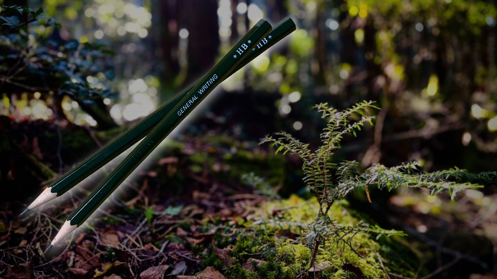
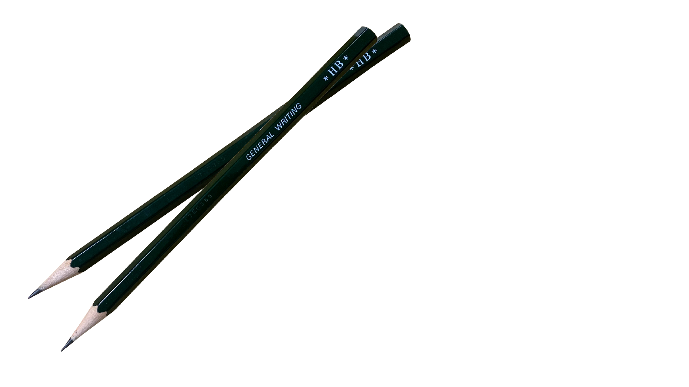

辻井麻里
本田こうじ
岩上愛美
この一本が、
世界を救う。
"国産檜" 使用 高級鉛筆

①【社会貢献 × サステナブル】
売上の一部を寄付に充て、
環境保護やSDGsの実現に貢献します。
また、エコ素材を使用した設計により、
未来を見据えたやさしい選択を後押しします。
②【使いやすさを追求した設計】
手が汚れにくく、芯が長持ちする工夫で経済的。
さらに、クッション性のあるグリップにより、長時間の使用でも手が疲れにくく、
快適な書き心地を実現しました。
③【高級感とユニバーサルデザイン】
洗練されたデザインは、性別や年齢を問わず手になじみやすく、誰にとっても使いやすい設計です。
上質な素材と質感にこだわり、贈り物にも最適。
名前の印字など、パーソナルなカスタマイズも可能で、長く大切に使いたくなる一本です。
お客様の声
辻井麻里
（30代・女性・デザイナー）
「長時間使っても手が疲れず、
見た目もおしゃれで気に入っています。
環境への配慮も購入の決め手でした。」
本田こうじ
（40代・男性・ビジネスパーソン）
「贈り物として購入しましたが、
とても喜ばれました。
重厚感があり、大人が使うのにふさわしい一本です。」
岩上愛美
（20代・学生）
「文字を書くのが楽しくなりました。
使うたびに自然のぬくもりを感じられて、
気持ちが穏やかになります。」
商品概要

『Tokiha（トキハ）』￥1000-
「時は」＝時間、流れ、持続
長く使える道具であること、贈る“とき”の美しさを含む
「時は」＝時間、流れ、持続
長く使える道具であること、贈る“とき”の美しさを含む
お問い合わせ
会社概要
| 会社名 | 株式会社 TIYWH（ティウ） |
|---|---|
| 設立 | 2025年5月 |
| 代表取締役 | 渡邉桜子 横山真那 |
| 本社 | 〒651-0094 兵庫県神戸市中央区琴ノ緒町４丁目３−３ Ｇ．Ｈ三宮駅前ビル 6階 |